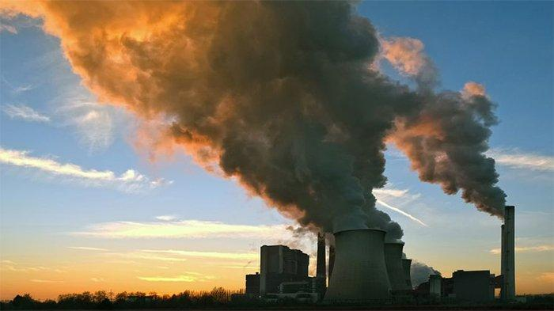

Cambio climatico
caracteristicas
Se caracteriza por el aumento de las temperaturas(segun la zona geografica)y la alteracion de los patrones climaticos. El aumento del nivel del mar. El retroceso de los glaciares. El aumento de los eventos climaticos extremos.
